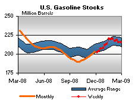

Released on March 4, 2009
(Next Release on March 11, 2009)
The Bakken Formation Helps Increase U.S.
Proved Reserves of Oil
This Week In Petroleum for January 28, 2009 noted that North Dakota had the Nation’s third largest increase in proved reserves of crude oil in 2007, 70 million barrels (17 percent). Most of this increase came from development of the Bakken Formation. What is the Bakken Formation and why does it matter?
What is the Bakken Formation?
The Bakken Formation contains a major onshore unconventional oil resource in Montana, North Dakota, and Saskatchewan, Canada. It has three distinct layers, called members. Two of these (the Upper and Lower Members) are shales, while the Middle Member is an interbedded zone of various rocks. The Bakken shales produce a light oil that is generally desirable because it offers a high yield of gasoline and other key petroleum products. Proved oil reserves in Montana and North Dakota grew from 831 million barrels in 2006 to 892 million barrels in 2007. (Proved reserves are the estimated quantities that can be produced with reasonable certainty from known reservoirs under existing economic and operating conditions.)
Bakken Formation
Source: United States Geological Survey (USGS)
History of the Bakken
The Bakken Formation first made headlines almost a decade ago in the year 2000 when the Elm Coulee Field was discovered in Richland County, Montana. This field grew rapidly and in 2007, it produced 18 million barrels of crude oil (52 percent of Montana’s 2007 oil production). Based on its 2007 proved reserves, the Elm Coulee Field is the 25th largest oil field in the United States. (The listing of the Top 100 Oil and Gas Fields in the U.S. is published in Appendix B of the U.S. Crude Oil, Natural Gas, and Natural Gas Reserves 2007 Annual Report available online from the EIA website.
Success in Montana has spurred interest in development of the Bakken Formation in adjoining States, especially North Dakota. North Dakota’s increase in proved crude oil reserves in 2007 came largely from the unconventional Bakken Formation.
Oil Shale or Oil Produced from Shale?
It is important to recognize the distinction between the production of oil from shale members of the Bakken Formation and the extraction of oil from oil shales. The difference stems from different geological histories. Many shale deposits around the world are potential sources of oil and natural gas because they have high organic carbon content. These organic deposits begin as viscous, dense substances (kerogen and bitumen) early in the history of a deposit. If the shale is subjected to enough heat and pressure, the organic substances turn first into oil and then, at higher temperatures and pressures, into natural gas. The Bakken Formation experienced the right heat and pressure to produce oil. So, the oil already exists in the Bakken Formation shale, and operators can produce it using similar horizontal drilling and hydraulic fracturing technologies they use to produce natural gas from other shales. There is little surface disruption and no need to heat large quantities of material to produce oil.
In contrast, oil shales have never been subject to the temperatures and pressures needed to convert kerogen and bitumen into oil. (Geologists refer to this difference between oil shales and shales that can produce oil directly as thermal maturity.) To obtain oil from such sources, operators must apply heat, water and chemical diluents to convert kerogen and bitumen into oil, either above ground or in situ. Shell Oil Company is currently researching a method to produce liquid oil from oil shale where no mining is required, by heating the oil shale within the ground at depth.
Ultimate Recovery from the Bakken Shale
Proved reserves are only a small part of the oil that is likely to be produced from the Bakken in the future. In April 2008, the United States Geological Survey (USGS) published a geology-based probabilistic assessment of the undiscovered, technically recoverable oil resources in the Bakken Formation. USGS estimated that the Bakken Formation may contain from 3.1 to 4.3 billion barrels of technically recoverable crude oil with the most likely average (mean) being 3.65 billion barrels. By comparison, total U.S. crude oil inputs to refineries were 5.5 billion barrels in 2007.
The USGS estimates, like any other estimate of technically recoverable but unconventional resource, may represent only a small percentage of in-place resources. As recovery technologies and reservoir knowledge improves, the recovery factor can increase, raising estimates of technically recoverable resources.
Residential Heating Fuel Prices Slow Their Descent
Residential heating oil prices dipped lower during the period ending March 2, 2009, marking their seventh consecutive week of falling. The average residential heating oil price decreased 1.3 cents per gallon last week to reach 222.0 cents per gallon, a drop of 133.0 cents per gallon from this same time last year. Wholesale heating oil prices rose 5.8 cents per gallon to reach 135.8 cents per gallon, 159.0 cents per gallon lower than the same period last year.
The average residential propane price sagged another 1.8 cents per gallon from last week to reach 227.4 cents per gallon. This was a decrease of 33.0 cents from the 260.4 cents per gallon average for this same time last year. Wholesale propane prices fell 1.3 cents per gallon, dipping from 77.1 cents to 75.8 cents per gallon. This was a decrease of 93.3 cents from the March 3, 2008 price of 169.1 cents per gallon.
Diesel Prices at Lowest Point Since February 2005
Following a one-week drop, the national average price for regular gasoline climbed 2.5 cents to reach 193.4 cents per gallon. The price was still 122.8 cents below a year ago and 218.0 cents below the all-time high set on July 7, 2008. Price changes were mixed, with prices in the western U.S. moving down. On the East Coast, the price increased a penny to 192.2 cents per gallon. In the Midwest, the price increase was the largest of any region, jumping 7.9 cents to hit 188.7 cents per gallon. The average price on the Gulf Coast climbed 4.4 cents per gallon to 182.9 cents per gallon. The drop of 1.1 cents in the Rocky Mountains resulted in a price of 179 cents per gallon, the lowest of any region. The price on the West Coast dropped 5.1 cents to 217 cents per gallon, remaining the highest of any region but still 121.6 cents below a year ago. The average price in California fell 7.2 cents to 218.9 cents per gallon.
For the seventh consecutive week, diesel prices fell. A drop of 4.3 cents took the national average price to 208.7 cents per gallon, the lowest price since February 21, 2005. The national average price was 157.1 cents below a year ago and 267.7 cents below the all-time high set on July 14, 2008. Once again, prices declined throughout the country. The price on the East Coast slid 4.6 cents to 215.3 cents per gallon, 154.7 cents less than a year ago. In the Midwest, the price dropped to 203 cents per gallon, sliding 4.1 cents to remain the lowest in the country and 160.9 cents lower than last year. The price in the Gulf Coast slipped 3.1 cents to 204.3 cents per gallon. The price drop of 6.7 cents in the Rocky Mountains was the largest decline among the regions, taking the price to 209.1 cents per gallon. Although the price on the West Coast remained the highest among the major regions at 218.5 cents per gallon, it was 155.1 cents lower than a year ago. The average price in California tumbled 7.5 cents to 214.4 cents per gallon.
February Draw on Propane Below Average
The February draw on the Nation’s primary supply of propane totaled 6.3 million barrels, a level significantly below the most recent 5-year average for this month of 11.3 million barrels. Moreover, the February draw was the lowest for this month since 2001, reflecting, in part, temperatures that were slightly above normal at both the National level and within the major propane heating regions. Last week, propane inventories fell by 1.1 million barrels and settled at an estimated 38.3 million barrels as of February 27, 2009. Regionally, East Coast inventories reported a gain of 0.5 million barrels, boosted by imports into the region, while inventories in the Midwest and Gulf Coast fell by 0.4 million barrels and 1.1 million barrels, respectively. The combined Rocky Mountain/West Coast region also reported lower inventories last week, down 0.2 million barrels. Inventories of non-fuel use propylene declined by 0.2 million barrels to 2.5 million barrels last week, with it’s share to total propane/propylene dropping slightly to 6.5 percent from the prior week’s 6.9 percent share.
Text from the previous editions of “This Week In Petroleum” is now accessible through a link at the top right-hand corner of this page.
| Retail Prices (Cents Per Gallon) | |||||||
| Retail Data | Changes From | Retail Data | Changes From | ||||
| 03/02/09 | Week | Year | 03/02/09 | Week | Year | ||
| Gasoline | 193.4 | Heating Oil | 222.0 | ||||
| Diesel Fuel | 208.7 | Propane | 227.4 | ||||
| Spot Prices (Cents Per Gallon*) | |||||||||||||||||||||||||||||||||||
|
|||||||||||||||||||||||||||||||||||
| *Note: Crude Oil WTI Price in Dollars per Barrel. | |||||||||||||||||||||||||||||||||||
| Stocks (Million Barrels) | |||||||
|  | |||||||
| Stocks Data | Changes From | Stocks Data | Changes From | ||||
| 02/27/09 | Week | Year | 02/27/09 | Week | Year | ||
| Crude Oil | 350.6 | Distillate | 143.3 | ||||
| Gasoline | 215.5 | Propane | 38.287 | ||||